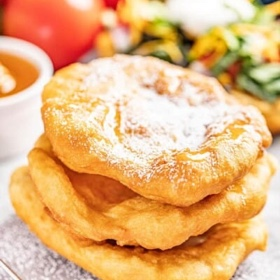

← All recipes
Indian Fry Bread

Servings: 12 pieces · Prep: 10 minutes · Cook: 25 minutes
Ingredients
- 1X 2X 3X
- 4 cups all-purpose flour
- 1 teaspoon salt
- 1 1/2 tablespoons baking powder
- 1 ½ cups hot water 120℉ to 130℉
- 2 tablespoons vegetable oil
- 1 quart vegetable oil for frying
Directions
- In a large mixing bowl, stir together 4 cups all-purpose flour, 1 teaspoon salt, and 1 1/2 tablespoons baking powder. Gradually add in 1 ½ cups hot water mixing with a spoon or your hands until combined. The dough should be soft and smooth, but still tacky to the touch.
- Drizzle 2 tablespoons vegetable oil over the dough to keep it from drying out. Cover the bowl with a clean towel or plastic wrap and let rest 2 hours. This is not a risen dough so the dough will not rise, but it does need to rest.
- Pour enough vegetable oil into a pot to cover it with 2 inches of oil. Heat on the stovetop over medium-high heat to 350 degrees Fahrenheit. Adjust the temperature as needed to maintain a consistent temperature.
- Pull off golf ball-sized pieces of dough and use your hands to stretch it out or use a rolling pin to roll it out until very thin, without ripping it. The thinner the better.
- Working one at a time, fry the dough in the hot oil until golden brown, flipping halfway through, about 2 minutes per side. Transfer to a paper towel-lined plate to drain.
- Serve hot drizzled with honey or dusted with powdered sugar, or use the fry bread to make fry bread tacos with your favorite toppings.
Notes
Fried bread can be kept warm on a baking sheet in a 200-degree oven until there is enough to serve.
Original source: thestayathomechef.com